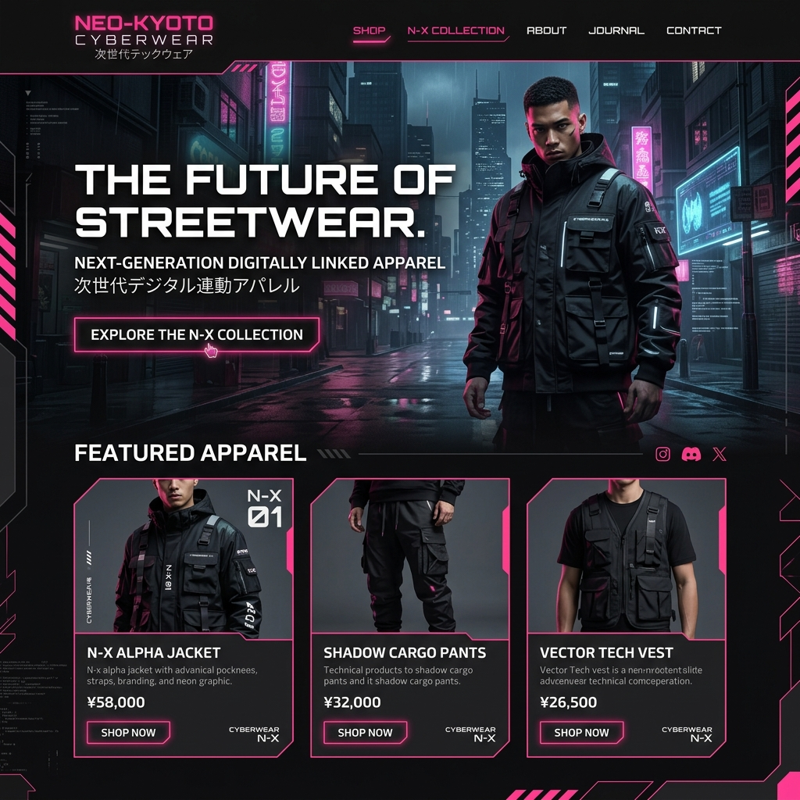

CONSTRUCTION TECH / GENERATIVE AI
「建築家」の頭脳を、
「建築家」の頭脳を、
クラウドで実行する。
GEN-ARCHは、敷地の条件と要望を入力するだけで、デザイン、構造計算、そして建築基準法チェックを完全にクリアした何千通りもの建築モデルを数分で生成する、建築AIプラットフォームです。

THE STRUCTURAL BOTTLENECK
「構造計算」というクリエイティブの足枷
建築家がどれほど美しいデザインを描いても、それが構造的に安全か、法的に問題ないかを人間が計算し直すために膨大な時間がかかり、結果的に平凡なデザインに落ち着いてしまうというジレンマがあります。
PARAMETRIC DESIGN
デザインとエンジニアリングの同時生成
数万パターンの自動生成
「日当たりを最大化しつつ、コストを抑える」。相反する条件を満たす形状をAIが遺伝的アルゴリズムで進化させ、最適なデザインを提案します。
リアルタイム構造計算
形状が変化するたびに、裏側でAIが瞬時に耐震性や風荷重を計算。倒壊リスクのあるデザインは最初から排除されます。
建築基準法の自動チェック
斜線制限や容積率など、複雑な法規制をクリアしているかをシステムが自動判定。役所への確認申請のプロセスを劇的に短縮します。
SUSTAINABILITY
環境負荷（CO2）のシミュレーション
その建物を建て、運用するのにどれくらいのエネルギーを消費するか。AIが建材の選定から空調効率までを計算し、最もエコな設計を導き出します。
BIM INTEGRATION
BIMデータへのダイレクトエクスポート
生成されたモデルはそのままBIMソフト（Revit等）のデータとして出力可能。施工図面への移行がシームレスに行えます。
CLIENT SUCCESS
Case Study | 大手デベロッパーのマンション設計
従来3ヶ月かかっていた基本設計のフェーズがわずか1週間に短縮。さらに、AIが導き出した独特の配置計画により、全戸南向きを実現し販売価格の向上に貢献しました。
OUR VISION
都市を、コードで再構築する
AIは建築家の仕事を奪うものではありません。つまらない計算作業から人間を解放し、真にクリエイティブな空間創りに集中するための最強の道具です。